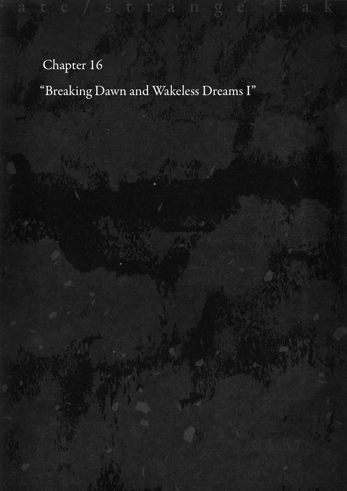
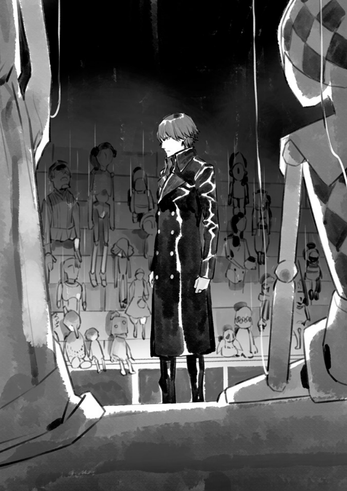
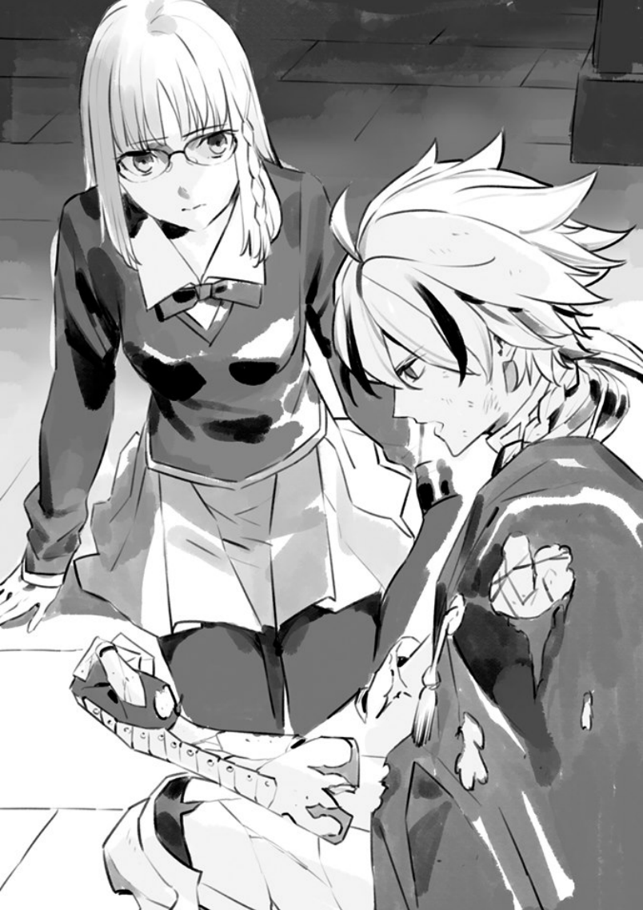

Dia 3: Breaking Dawn and Wakeless Dreams I
Num Sonho
O vento sopra. O vento sopra.
Fuuu, shaa, tudo vai se derretendo junto. As estrelas, os prédios altíssimos e até os moradores sonolentos da cidade.
Mesmo no sonho, a garota continuava dormindo. Dormia porque tinha escurecido. Dormia porque estava com sono. Esse era o modesto desejo da garota. E, portanto, por isso mesmo . . .
"--------" "-------------"
Seu protetor apenas agia para realizá-lo. Para pôr para dormir as luzes ofuscantes que impediam a garota de descansar em paz. Para calar o vento barulhento que ameaçava a salvação da garota.
Em _____
Uma voz.
Uma voz começou a alcançar os ouvidos dos "observadores", adormecidos. "Vocês, desse tipo, vão contar a história do meu amor e do meu ódio?" De quem seria aquela voz? Era uma voz afiada e, ao mesmo tempo, tremendo com as chamas do rancor. Cada palavra que pronunciava gelava o ar e parecia anunciar uma tragédia.
Os "observadores" reconheceram a voz seguinte. "Isso mesmo. Fechado. É trato. Eu vou arranjar sua vingança em forma de livro. Vou contar para Paris inteira, para o mundo inteiro, sobre você."
Era a voz do Servo que lhes havia dado força para lutar, Alexandre Dumas. Depois do som veio uma visão nebulosa. Os "observadores" viram um homem de preto com um garfo afiado na garganta de Dumas. Aquilo devia ser algum tipo de combate. Dumas não seguira os passos do pai marcial. Ainda assim, diante de um "rival", arriscava a própria vida em suas palavras.
"Todo mundo tem ao menos um pouco de amor e ódio. Até um moleque consegue contar uma história sobre isso. Mas quem consegue contar a história do seu amor e do seu ódio, Edmond Dantès, Conde de Monte-Cristo? . . . Eu consigo. Só eu consigo, vingador. O que separa o seu rancor, por ter a vida inteira roubada, do rancor de um pirralho por causa do irmãozinho que pegou seus doces? Claro que existe uma diferença! Mas não é você quem consegue contá-la da maneira mais dramática. Você consegue falar ao coração de milhares, de milhões de pessoas? Eu consigo! É para isso que serve a minha pena! . . . Ou, colocando de outra forma, você já falou a milhões, a bilhões de pessoas! Vai ser a minha pena que vai pôr isso no papel, mas foi você quem me mostrou o jeito como vive!"
Apesar do garfo ainda encostado em sua garganta, Dumas se pôs de pé no meio do discurso e falou com a voz plena de um comandante rude se dirigindo às tropas.
". . ."
Seguiu-se um breve silêncio. O homem de preto encarou Dumas sem expressão, mas, no fim, abaixou o garfo com um ar de repulsa e praticamente cuspiu:
". . . Não vou exigir compensação, mas esse seu 'trato' está longe de ser razoável." "Ah, mas vai ser compensado", respondeu Dumas, dando de ombros e abrindo um sorriso largo. "Vou transformar você numa celebridade."
Então, abrindo bem os braços, com os olhos brilhando como os de uma criança que descreve os próprios sonhos para o futuro, começou a expor suas ideias ao homem de preto.
"Meu protagonista vai trilhar uma estrada de vingança pavimentada por jorros de sangue vermelho-vivo e ódio negro como piche, mas todo mundo vai aplaudir isso como se fosse justamente o que torna tudo belo."
"Vou fazer com que, pelos próximos mil anos, a palavra 'vingador' faça qualquer francês pensar em você."
Os "observadores" finalmente perceberam que Dumas conduzia uma negociação. E que o homem de preto à sua frente devia ser o modelo de alguém de sua vasta obra.
Alguns "observadores" mais bem lidos se deram conta de quem era o homem de preto, mas não conseguiam se livrar da dúvida: "Ele não pode ter existido de verdade, pode?"
"Isso vai completar sua vingança. A sociedade o caluniou, o povo o esqueceu, o mundo o abandonou. Mas, pela primeira vez, as pessoas vão reconhecer que você estava certo."
"Certo . . .? Acha mesmo que eu quero isso?" "Você à parte . . . isso pode significar salvação para as pessoas que se envolveram com você." Ao ouvir isso, o homem de preto voltou a se calar. Então balançou a cabeça lentamente. "Faça como quiser." "Você não se importa?" "O homem chamado Edmond Dantès já não existe. O que resta aqui é apenas um rancor que continua a cair para o outro lado do amor e do ódio."
Mesmo assumindo uma visão filosófica de sua situação, a voz do homem ainda parecia arder em chamas sombrias.
Dumas tornou a girar a taça de vinho e disse, com uma ponta de solidão: "Então você está abandonando Edmond Dantès?" ". . . É o nome de um homem que devia ter desaparecido dentro do Château d'If." "Esse casaco em que você se enrolou é como um fogo negro. Pretende se queimar um dia desses? . . . Ou então . . . já fez isso? Uma tulipa negra tem a mesma cor, mas seria uma visão capaz de agitar o coração do povo. Nunca pensou em voltar atrás antes de virar só cinzas?"
Os "observadores" se confundiram. Dumas havia falado como se aprovasse a vingança. Por que tentaria demover o outro homem justamente agora?
"É, isso mesmo. O único lugar para onde você vai é o inferno. Uma escuridão ainda mais funda do que as chamas negras que o envolvem. Não há salvação para você. Já vi seres humanos o bastante para afirmar isso com certeza. Aposto nove em dez que você não vai conseguir voltar. Vai acabar esmagando a felicidade comum com as próprias mãos. Mas, se voltar atrás agora, talvez termine do mesmo jeito que o herói do romance que vou escrever."
Dumas quase parecia tentar convencer o homem a não deixá-lo escrever o romance. O vingador de preto o ouviu e, com um sorriso incrivelmente alegre, soltou uma risada sinistra para o ar vazio.
"Entendo . . . Então você, o homem que chamavam de rei de Paris, garante o inferno que me aguarda." "E está rindo do quê?" "Estou aliviado. Isso significa que meu caminho vale a pena ser trilhado." O vingador deixou infiltrar na voz uma fúria cujas chamas ameaçavam consumi-lo enquanto prosseguia.
"Eu não preciso de salvação! Não preciso de misericórdia! Como eu poderia falar em 'vingança' se me recusasse a pagar o preço de arrastar até inocentes para dentro da minha ira?!"
Por que estamos aqui? Por que estamos vendo isso? Os "observadores" se perguntaram. Mas, ao mesmo tempo, não conseguiam desviar o olhar. Mesmo sem conhecer a identidade do homem que falava com Dumas, sentiam dolorosamente as chamas escuras da alma que habitavam dentro dele.
Era como se tivessem sido trazidos até aquele lugar por essas chamas. Ignorando tanto as circunstâncias do homem quanto as de Dumas, os "observadores" apenas sentiam o coração sendo influenciado de maneira misteriosa pelo homem de preto.
O homem de preto fez uma pausa, voltou-se para Dumas e retomou a fala. "Ainda assim . . . o que acontece a um homem que entra no inferno não é problema seu." Ele deu uma risadinha e disse, com um toque de prazer: "Pensei que você fosse um agarrado a dinheiro, como meus arqui-inimigos . . . mas é surpreendentemente cordial, romancista."
". . . E faz diferença? Eu já tenho mais dinheiro do que sei o que fazer com ele." Dumas coçou a cabeça, sem jeito com o comentário repentino. O homem de preto lhe deu as costas e começou a caminhar para a porta dos fundos. "É apenas um nome que abandonei. Se você diz que vai salvá-lo com a sua pena, então salve-o, se puder." "Ah, eu vou. Sim . . . vai exigir um pouco de preparação . . . mas, na próxima vez que eu ouvir alguém mencionar a ilha de Monte-Cristo em algum contexto que não tenha nada a ver com você, vou entender isso como um sinal do destino. Acho que vou começar a escrever nessa hora. Vou serializar num jornal ou algo assim, então pode ficar esperando."
"Trate de não se esquecer. Se eu não gostar do final, farei uma visita ao seu quarto para rasgar o manuscrito e sua garganta."
Dumas respondeu à ameaça, cuspida com um sorriso aguçado e bem-humorado, com sarcasmo. "Claro. Se eu enriquecer de vez, construo um 'Château de Monte-Cristo' nas margens do Sena para você saber onde me encontrar."
Ele não fazia ideia de que um dia realizaria o que dissera como piada.
"Enfim, se o final agradar ao seu gosto, apareça para me aplaudir. Se puder, eu adoraria descobrir como o meu modelo realmente terminou."
"Só tenho uma coisa a lhe dizer." O homem de preto abriu um sorriso tênue, torto e, de costas para Dumas, pronunciou:
"Esperar e ter esperança."
Os "observadores", que haviam escutado a dupla, já não conseguiam ver mais nada da cena. No instante em que o homem de preto falou, a consciência deles recuou daquele espaço. E, enquanto isso acontecia, tiveram a premonição de que já haviam sido incorporados à vida vivida pelo Espírito Heroico Dumas, à sua "história".
Então a luz envolveu a consciência dos "observadores" . . .
Sob a Luz da Manhã
". . . O que . . . foi isso?" Vera, coordenadora da unidade policial, percebeu que estava deitada num banco nas dependências do hospital e se ergueu devagar.
"Onde . . .? Como vim parar aqui?" Os outros oficiais jaziam pelo chão ali perto e também começavam a se levantar, como se obedecessem a um sinal. Todos examinavam os arredores com expressões de confusão. "Onde . . .?" "Hã? O Caster não estava bem aqui . . ." "O sr. Caster . . . e um homem de preto . . ." A julgar pelos murmúrios, Vera concluiu que todos tinham visto a mesma cena. "Um sonho . . .? Mas foi tão . . ." Vívido e real. Eles se lembravam até com clareza do que tinha sido dito. Era como se apenas a mente desperta de cada um tivesse sido soprada para outro tempo e outro lugar.
"Ah, então todos vocês viram aquilo também?"
". . . John?"
A voz atrás de Vera vinha de John, que parecia já estar acordado. Sua mão protética estava meio destruída, e ele havia perdido a lâmina de veneno da Hidra. Claro, teria sido incrivelmente perigoso se a mão tivesse se quebrado com a lâmina exposta, então, nesse sentido, até que fora uma sorte.
"Já que vocês falaram de um cara de preto, então viram o sr. Caster conversando com o vingador no restaurante . . . Bem, essa foi a primeira coisa que me mostraram também . . ."
"A primeira . . .? John, o que aconteceu com você? Como conseguiu um poder desses?" John respondeu às perguntas frias e objetivas de Vera com uma confusão visível. "Bem . . . eu também não entendo muito bem . . . Me mostraram todo tipo de 'conto heroico', começando por aquele, por umas . . . dez horas, eu acho. Mosqueteiros absurdamente fortes, como os três famosos, e o herói revolucionário Garibaldi. Depois mudou para uma reunião dos autores incríveis que ele conheceu em Paris . . . Ah, mas acho que esses autores também eram heróis . . ."
John soava aturdido. Vera reagiu com estranheza a uma das coisas que ele dissera. "Dez horas . . .?" "É. O estranho é que, quando acordei, a poeira ainda estava caindo do teto do hospital. Então acho que, na verdade, só devem ter se passado alguns minutos. Mas uma coisa é certa: o sr. Caster me deu poder . . . isso eu consigo perceber."
"Caster deu . . .? Será que ele subiu lá de baixo? Ele também está aqui?" "Falando em aqui . . . onde, afinal, é este lugar . . .?" A voz de John foi morrendo enquanto ele olhava para a entrada principal do hospital, voltada para a Rua Principal.
"Acordei em frente à igreja, mas . . . Bem, veja com os próprios olhos. Eu não sei explicar . . ." "?"
Instigada por John, Vera levou vários outros oficiais que haviam recuperado a consciência para fora do terreno do hospital, onde viram . . . nenhuma marca de destruição. Pequenos pássaros voejavam sobre a superfície impecável da Rua Principal.
A igreja, que devia estar meio destruída, também tinha sido restaurada. Na verdade, não parecia exatamente "restaurada", mas sim como se nunca tivesse sido destruída.
Era como se aquilo quisesse afirmar que a destruição causada pela batalha entre Espíritos Heroicos na noite anterior não passara de uma ilusão.
Atrás dos oficiais atônitos, John, com os olhos exaustos, fez uma pergunta que parecia meio dirigida a si mesmo.
"Se a luta antes de perdermos a consciência aconteceu mesmo . . . então que lugar é este . . .?"
Snowfield, Centro Correcional Especial Colesman
"Eles desapareceram. Não há outra forma de colocar isso." Publicamente, aquela instalação era uma prisão privada, algo comum nos Estados Unidos da época. No centro especial de vigilância instalado em suas profundezas, Faldeus soltou um pequeno suspiro. Depois de passar os olhos pelo relatório, refletia sobre o desaparecimento de vários de seus associados que haviam estado na cena.
O relatório lhe dizia que a polícia havia cercado o hospital. Também dizia que alguém da delegacia havia entrado em contato com o hospital com antecedência. Quando viu o nome da paciente atendida pela médica com quem haviam falado, Faldeus balançou a cabeça.
"Kuruoka Tsubaki . . . Malditos Kuruoka. Não acredito que tenham preparado a própria filha hospitalizada para servir de Mestre."
Faldeus já desconfiava das motivações dos Kuruoka, magos que haviam cooperado com esta Guerra do Santo Graal Falsa, mas, graças ao caos do dia anterior, conseguira formar uma ideia geral das circunstâncias.
"Não sei se ela desenvolveu Selos de Comando por acidente ou se foi intencional . . . mas agora entendo. Eles estão usando a própria filha para fornecer Energia Mágica e dirigindo o Servo de um local seguro . . . É ardiloso, mas suponho que seja razoável. Ouvi dizer que, até na Guerra do Graal de Fuyuki, um Lord renomado usou a noiva como fonte de Energia Mágica."
"Você acha que o Servo de Kuruoka Tsubaki fez alguma coisa?" Faldeus respondeu à mulher que o servia como ajudante de ordens, Aludra, com um breve aceno de cabeça. "Recebi de Francesca a garantia de que não há vestígio algum de magia sendo usada para prejudicar o reconhecimento, nem sinal de qualquer ilusão lançada. Claro, ela parecia estar se divertindo com a situação."
"Ou seja, mais de trinta pessoas sumiram da Rua Principal num intervalo curtíssimo de tempo. Incluindo Servos, se partirmos do princípio de que eles não se desmaterializaram para se ocultar."
A declaração prática e desprovida de emoção de Aludra levou Faldeus a voltar a percorrer com os olhos a lista no relatório.
"Além da unidade policial, entre os desaparecidos estão Flat Escardos, Hanza Cervantes, o autoproclamado supervisor e quatro freiras que se acredita serem subordinadas dele, que estavam na igreja . . ."
Oficialmente, ele é um padre comum, mas, a julgar pelos relatórios do chefe Orlando e pelas imagens de combate captadas pela nossa rede de vigilância, deve ser um executor. E dos competentes.
Faldeus franziu o cenho e então leu os nomes restantes. "Também . . . Sigma e a Mestre de Saber, que estava com ele." Observando a mulher loira de óculos que vira nos registros em vídeo, Faldeus mergulhou em pensamentos.
"A identidade dela me preocupa . . . mas ela não parece uma maga. Não dá para descartar a possibilidade, porém devemos enxergar isso como obra do Servo de Kuruoka Tsubaki."
Eles tinham perdido contato com Sigma, que, na prática, estava do lado deles. Também não haviam conseguido confirmar Assassin e Saber, que pareciam acompanhá-lo, desde aquela manhã.
Mesmo deixando de lado Assassin, que fora invocada como sacrifício para dar a partida ao mecanismo, se Saber tivesse sido destruído, sua Origem Espiritual e sua Energia Mágica deveriam ter sido derramadas no Graal.
O fato de não haver sinal disso significava que havia grande possibilidade de que, pelo menos, Saber ainda estivesse vivo.
Nesse caso, para onde eles haviam desaparecido? Faldeus queria considerar a questão com calma, mas Aludra relatou um assunto que exigia sua atenção com ainda mais urgência.
"Digamos que a destruição na Rua Principal tenha sido resultado do rompimento de dutos subterrâneos de gás . . . uma reação em cadeia provocada pelo acidente no gasoduto do deserto outro dia. Vai ser um pouco duro para a companhia de gás . . . mas nós a criamos para ser descartável. Tenho pena dos funcionários de baixo escalão que não sabem de nada, mas deixaremos isso por conta dos planos de assistência social que os políticos 'comuns' elaborarem."
Faldeus falou sem a menor preocupação enquanto deslocava a atenção para outro problema. Já passou da hora de eu localizar o meu próprio Servo. No pior caso, talvez eu tenha de usar um Selo de Comando para trazê-lo de volta . . . No instante em que se preparava para retornar ao trabalho . . . sentiu uma leve alteração no fluxo de Energia Mágica dentro de si.
". . ."
Era uma sensação estranha, diferente de seus cinco sentidos habituais. Como se o interior de seu corpo tivesse escurecido só um pouco.
Faldeus a reconheceu intuitivamente como um "sinal". Deixou os detalhes restantes para Aludra resolver e saiu da sala de vigilância.
Entrou em seu "ateliê" dentro da mesma instalação, confirmou que a porta estava fechada, isolando-o de todas as ondas de rádio e de toda a Energia Mágica externa, e então falou.
". . . Posso perguntar o que está tentando fazer?" "O que desejas perguntar, meu contratante?" Uma voz absolutamente destituída de emoção e, por isso mesmo, absolutamente aterradora soou atrás de Faldeus.
Os bonecos do ateliê, passados de geração em geração por seus ancestrais. Enquanto falava com a dignidade de um Mestre, Faldeus se pegou imaginando que aquela voz vinha de cada um deles.
"Refiro-me, naturalmente, às ordens que lhe dei, Assassin, não, Hassan-i Sabbah." Ele fez questão de pronunciar o nome em voz alta. Faldeus se dirigia ao próprio Servo, a quem talvez chamasse de "Assassin verdadeiro" em contraste com a fanática garota que fora invocada como sacrifício para dar a partida ao mecanismo.
"Ordenei que assassinasse Galvarosso Scladio, o chefe da Família Scladio. E, no entanto, tudo parece ter tomado um rumo estranho."
No dia desde que dera essa ordem, uma parte dos Estados Unidos havia mergulhado no caos. Em apenas um dia, trinta e cinco figuras importantes dos mundos dos negócios, da mídia, da política e da diplomacia haviam morrido em decorrência de acidentes ou doenças. E, entre as mortes por causas naturais, a maioria resultara de derrames ou ataques cardíacos repentinos, e não de longas enfermidades.
"Ainda não recebi confirmação da morte de Galvarosso . . . mas a área em que se acredita que ele resida produziu uma fatalidade atrás da outra. Não seria razoável não suspeitar de uma ligação."
Faldeus falou de maneira agressiva, escondendo o suor frio nas costas e nas mãos. Se o seu Servo estivesse cometendo uma série de assassinatos por algum motivo próprio, Faldeus precisava contê-lo, ainda que isso significasse usar um Selo de Comando.
Se, porém, o Servo fosse do tipo que não teme a própria destruição, então era inteiramente possível que matasse Faldeus antes que Faldeus tivesse a chance de ativar seu Selo de Comando.
Faldeus se preparou mentalmente ao fazer a pergunta, pronto para disparar um Selo de Comando a qualquer instante . . . mas a sombra, Hassan, simplesmente respondeu com impassibilidade.
"Não me desviei de nosso acordo. Apenas devolvi ao outro lado do sono as vidas que a tua fé determinou encerrar."
Era uma voz fria, robótica, como se uma sombra sem vontade própria estivesse falando. "Como aquele que caminha nas sombras da purga sagrada, eu juro, dei, com certeza, fim à vida daquelas pessoas: Galvarosso Scladio."
"Daquelas . . . pessoas?"

Faldeus franziu o cenho em dúvida e então ergueu o rosto, encarando-o. "Não me diga . . .!" "Exatamente." A "escuridão" que estava atrás de Faldeus dissipou suas dúvidas ao declarar calmamente um único fato. "Galvarosso Scladio já havia corroído a própria 'individualidade'. Isso é tudo."
Um Dia Antes, Em Algum Lugar dos Estados Unidos, Mansão Scladio
A Família Scladio. Era um dos maiores sindicatos criminosos dos Estados Unidos, exercendo forte influência não apenas sobre o submundo do crime, mas também sobre o mundo dos negócios.
Havia uma razão para que mantivessem sua base de poder mesmo com a intensificação do combate aos cartéis. Eles reuniam magos que, por um motivo ou outro, haviam sido expulsos da Torre do Relógio ou de organizações asiáticas de magos, além de usuários de magia dispersos, e usavam seus abundantes recursos financeiros para sustentar as atividades deles.
Em troca, esses magos ofereciam magia à Família Scladio, mas não havia coerção. Os magos e usuários de magia auxiliavam a Família Scladio por vontade própria, a fim de não perder um patrono ideal ou um protetor contra organizações rivais.
A Família Scladio também tinha fortes conexões com cartéis de drogas sul-americanos, mas as "drogas" deles nunca chegavam ao mercado. Essas drogas, submetidas a várias formas de aprimoramento, eram usadas como catalisadores especializados ou ingredientes de elixires pelos magos apadrinhados pela Família.
A Torre do Relógio fazia vista grossa à Família em certa medida, raciocinando que, embora adorasse esmagá-la se surgisse a oportunidade, o confronto com os Estados Unidos e a libertação dos usuários de magia afiliados à Família pesariam mais do que os benefícios de fazê-lo naquele momento.
O líder dessa poderosa organização, cujo alcance se estendia ao mundo público, ao criminal e até à sociedade dos magos, estava naquele instante . . . largado como um lençol sobre uma enorme cama, na parte mais profunda de uma vasta mansão, com respirador e incontáveis tubos ligados ao corpo.
Qualquer um que o visse suporia que lhe restavam, no máximo, alguns anos de vida, mas ele sorria por trás do respirador enquanto entregava uma grande raposa de pelúcia à garotinha ao lado da cama.
"Obrigada, tataravô! Vou guardar isto comigo pelo resto da vida!" "Muito bem . . . Olivia. Não precisa guardá-la por tanto tempo. Quando encontrar algo de que goste mais, esqueça de mim."
O velho acamado falava com a menina de cinco ou seis anos numa voz rouca, mas ainda firme.
Seu nome era Galvarosso Scladio. Era um nome falso, mas não seria exagero dizer que aquele nome, que deixara marcas no mundo, era tudo o que ele era.
Era o chefe da Família Scladio, um homem que empregara todos os meios à disposição para prolongar a própria vida. Oficialmente, tinha 109 anos, mas corria o rumor de que era ainda mais velho.
A maior parte desses meios empregava magia e jamais poderia vir a público, mas, talvez por ele próprio não ser um mago, havia um limite para o que podiam fazer para deter sua degradação física e mental.
Magos de nível realmente elevado eram capazes de transformar a si mesmos em hematófagos e outras coisas "inumana", mas nenhum dos magos afiliados à Família, ao menos, era capaz de converter outra pessoa, especialmente um não mago como Galvarosso, sem riscos.
"Escute, Olivia." "O que foi, tataravô?" Galvarosso sorriu ao se dirigir à garota, a mais nova entre seus quarenta e três tataranetos.
"Você é a cara da minha esposa, que morreu oitenta anos atrás . . . Deixe-me olhar melhor para o seu rosto."
"Você está esquisito, vovô. Está falando como se fosse embora logo." Os guardas que acompanhavam a menina desviaram um pouco o olhar diante da observação ingênua. Deviam saber que Galvarosso provavelmente já não tinha muito tempo. O próprio velho, porém, não demonstrou fraqueza alguma e continuou ouvindo a tataraneta com um sorriso.
Depois de uma breve conversa, a garota e os guarda-costas saíram do aposento. Galvarosso, preso à cama, ficou sozinho ali dentro com os sons tênues do respirador. Embora o quarto não contasse sequer com um guarda, a magia havia transformado a sala nos recessos mais profundos do quartel-general da Família Scladio numa fortaleza.
Um dos guarda-costas que trouxera a tataraneta era um mago competente. Sem a orientação dele, ela nem teria percebido o corredor que levava ao quarto.
Um gigantesco ateliê composto, criado pelo máximo esforço da elite mais refinada entre os muitos magos à disposição da Família, essa era a residência principal dos Scladio.
Mecanismos de defesa de vários tipos e inúmeros espíritos malignos dentro de uma barreira poderosa de trinta e cinco camadas.
À luz de um caso em que o ateliê de um mago fora destruído junto com o edifício que o abrigava, seus sistemas haviam sido projetados para se defender tanto contra projéteis lançados do ar quanto contra tentativas de destruir os alicerces vindo das profundezas subterrâneas.
Para que defesas místicas o superassem, seria preciso olhar para centros de magos como a Torre do Relógio ou o Mar Errante, ou então para labirintos e covis de vício que magos poderosos o bastante para se aproximar da Raiz passaram a vida inteira construindo.
No centro da barreira mais resistente havia um espaço desprovido de qualquer vestígio de insetos, quanto mais de malícia. Não havia ali nada que ameaçasse Galvarosso além do próprio tempo de vida. Apesar disso . . . ele removeu deliberadamente o respirador, encarou o vazio e falou.
". . . Você está aí, não está, escuridão que anuncia o meu fim?"
O vazio não respondeu. Mesmo assim, Galvarosso continuou a falar, como se estivesse sozinho. ". . . Sim, eu sabia. Já sabia . . . há anos." Respirar devia ser difícil sem o respirador, mas Galvarosso continuou a falar longamente.
"Derramei minha fortuna pessoal num leilão para obter estes Olhos Místicos . . . Não éramos muito compatíveis . . . ou talvez compatíveis demais . . . mas eles só me mostravam um único futuro . . . uma vez . . . e outra . . . e outra."
Os olhos ligeiramente desencontrados do homem continham um riso autodepreciativo enquanto ele continuava a se dirigir ao espaço vazio.
"Hoje, o dia em que eu morro . . ." Ainda assim, o espaço vazio não respondeu. Mas Galvarosso soava certo de que estava sendo ouvido. Algo em seu rosto expressava alívio. "Eu soube que seria hoje . . . no instante em que Olivia me pediu . . . a raposa de pelúcia." Galvarosso recebera a implantação de um Olho Místico na cabeça num certo trem. Esse Olho Místico lhe mostrara o futuro. O futuro que se desenrolaria naquele local fixo. Ele se vira tendo os olhos fechados pela "escuridão" depois de entregar uma raposa de pelúcia à tataraneta. "Era simples. Bastava eu não dar a raposa à Olivia . . . o membro mais novo da minha
família. Talvez isso bastasse para mudar o meu destino. Foi o que pensei . . . mas suponho que seja isso que significa envelhecer . . . Se a alternativa é ver Olivia chorar e emburrar, prefiro aceitar a morte . . . Foi isso que senti de verdade."
Galvarosso explicava a si mesmo em voz baixa para o que deveria ser um espaço vazio. Não havia traço do líder impiedoso que um dia aterrorizara sindicatos rivais, apenas um homem à beira da morte que continuava a falar com algo invisível.
"É engraçado, não é? Esmaguei várias organizações e matei muita, muita gente para chegar até onde cheguei . . . Por favor, escuridão que me trouxe a morte . . . Se você realmente está aí, escute . . . eu . . . vou acabar, mas não assim . . . Não, eu não posso terminar . . ."
Seu rosto ia ficando cada vez mais pálido, talvez pela falta de oxigênio, já que havia removido o respirador.
Mas, como se ainda houvesse algo que precisava dizer, estendeu a mão para o vazio enquanto continuava.
"Os magos que procuram prolongar minha vida . . . decidiram que já não importa se eu sou eu mesmo . . . Bazdilot foi contra . . . mas os outros magos . . . mataram as almas de outros americanos poderosos . . . e sobrescreveram . . . suas personalidades. Querem transformar este país . . . num paraíso de magos . . . Por favor . . . impeça essa insanidade . . . Deixe-me . . . terminar . . . Eu só queria uma chance . . . de usar magia . . . usar magecraft . . ."
Sua fala havia se quebrado. As palavras já não conseguiam formar frases inteiras. Ainda assim, como se lutasse para entalhar sua essência no mundo, gravou no ar do quarto palavras que eram quase maldições.
"Sim, sim, a primeira mulher por quem me apaixonei, minha esposa, era uma maga . . . Quase nenhum Circuito Mágico . . . Quase uma amadora . . . Morta pela Torre do Relógio . . . Magia . . . Sim, magia . . . poder . . . Eu sempre ansiei por isso . . . como uma criança . . . Queria . . . usar magia . . . como ela usava . . . Queria ver o mesmo mundo . . . a mesma paisagem . . . que minha esposa via . . . Era só isso que eu queria . . . poder . . . uma organização . . . Ah . . . Aah . . ."
Galvarosso continuou seu relato fragmentado do próprio caminho, como se quisesse expiar os pecados. À medida que as palavras transbordavam, havia um tremor de emoção em seus olhos. Então, quando seu coração estava prestes a se romper sob o medo da morte . . . a escuridão se estendeu do vazio e cobriu seus olhos de forma silenciosa e gentil.
"Aquilo" realmente existia. Um mensageiro da morte que penetrara no coração daquele gigantesco ateliê de magia, cujas barreiras e mecanismos de defesa, ainda que não supremos, ficavam só um passo abaixo disso, sem ativar um único sistema sequer.
"Nada tens a temer."
Era uma voz estranha. Parecia vir do quarto inteiro e, ainda assim, só Galvarosso podia ouvi-la. Suas palavras eram simples, mas, por serem simples, ressoaram depressa em suas emoções caóticas.
". . . Tem certeza? Um homem como eu . . ." Lágrimas escorreram de seus Olhos Místicos, que já não lhe mostravam mais nada. A escuridão envolveu piedosamente sua vida.
"Não tenho razão para julgar-te, nem a tens tu. Confia tudo à noite."
A escuridão, que sem que ele percebesse assumira forma humana, pousou a mão sobre a cabeça do homem e entoou com frieza:
"Desperta em paz, do outro lado do sono."
Então, sem ser notada, a escuridão desapareceu do quarto, deixando para trás apenas um velho que já não precisava respirar, de olhos fechados e com um leve traço de alívio no rosto.
Ele ansiara por magia. Alguns poderiam dizer que, para um homem que se movera por tanto tempo nos bastidores da sociedade dos magos e da sociedade americana por uma razão tão infantil, seu fim fora pacífico demais.
O Presente, Snowfield, Fábrica de Processamento de Carne
A batalha entre o gigantesco Espírito Heroico mecânico e Alkeides deixara a fábrica de processamento de carne em ruínas.
Graças ao Fantasma Nobre de Francois Prelati, porém, ela aparentemente tinha sido restaurada. Dentro daquele espaço distorcido, o mago que era Mestre de Alkeides, Bazdilot Cordelion, recolhia elementos que não haviam sido destruídos e reconstruía um ateliê simples na fábrica.
Seus subordinados, magos da Família Scladio, cochichavam entre si ao observar de longe Bazdilot, que usava magia para contatar alguém por um comunicador.
"Ei . . . quando é que o sr. Cordelion dorme?" "Você não sabe? Ele é diferente. Ouvi dizer que consegue se virar dormindo só uns poucos segundos por dia." ". . . Sério? Eu até conseguiria imaginar ele aguentando alguns dias assim com magia, mas . . ." "E não é só isso. Ele também come o mínimo possível. Corre o rumor de que passou trinta dias sem comida nem água enquanto caçava e liquidava um usuário de magia hostil entrincheirado num ateliê numa montanha nevada."
Os magos observavam seu superior trabalhar com olhos assustados. "Graças a Deus ele está do nosso lado . . . Até quando enfrentou aquele Espírito Heroico assustador ele não cedeu nem um centímetro."
"É. Não sei que tipo de magos são os outros Mestres, mas não consigo nem imaginar esse homem perdendo."
Mesmo entre magos e usuários de magia, eles eram quase andarilhos. Tampouco ocupavam posições particularmente altas dentro da Família.
Mas uma voz masculina madura, que, ao contrário das deles, era perfeitamente calma, ecoou pela fábrica de processamento de carne.
"Não . . . O sr. Cordelion não é invencível. Já foi derrotado algumas vezes, e não faz segredo disso."
Era o homem que trabalhava sob Bazdilot havia mais tempo. Ele viera substituir o homem que por sua vez havia sido substituído por um mago inimigo e ocupava posição relativamente alta na Família Scladio, embora Bazdilot ainda estivesse muito acima dele.
O veterano usuário de magia elaborou para os subordinados mais jovens. "Ele quase morreu lutando contra executores da Igreja Sagrada, e um freelancer chamado Shishigou o venceu no jogo mental certa vez. Magalo ou Der Familie arrancou um dos pulmões dele, e o Irmão Degras queimou a maior parte dos Circuitos Mágicos dele. Acho que ele empatou com Wu, da Marvel Company . . . Isso foi antes de ele entrar para a Família, mas ouvi dizer que esperava morrer quando enfrentou uma das organizações mais infames da Torre do Relógio, a Abadia Sponheim, eu acho."
"F-Foi assim?" ". . . O assustador nele é que nada disso abriu nem uma fissura no mental dele. Não importava se apodreciam seus órgãos ou jogavam a cabeça da amante aos pés dele, ele nem pestanejava. Quem largou aquela cabeça provavelmente esperava lançar alguma coisa sobre ele enquanto estivesse abalado . . . mas isso não saiu como esperavam."
O mago falou com naturalidade enquanto acendia um cigarro. ". . . O que aconteceu com esse mago?" Um dos subordinados engoliu em seco antes de perguntar.
"A mesma coisa. Ele simplesmente enfiou o sujeito naquela máquina e o transformou num Cristal de Mana, igual a todos os outros. Claro, ele chorou e se descabelou de um jeito bem mais patético que os demais."
O olhar do homem pousou sobre a máquina descomunal desenvolvida pelo mago Atrum Galliasta para converter a força vital humana em Cristais de Mana. Ela fora danificada na batalha com o gigantesco Espírito Heroico no dia anterior e, naquele momento, estava inoperante.
Ainda assim, isso não era um problema. Eles tinham cristais estocados o bastante para permitir a Alkeides usar toda a força ao longo da duração da Guerra do Santo Graal.
"Estão vendo, ele sacrificou a própria vida e a própria família ao chefão, Galvarosso Scladio . . . Eu nunca vi aquele homem chorar nem . . ."
O homem falava de maneira indiferente, mas naquele ponto se interrompeu de repente. Bazdilot havia se afastado do comunicador e começado a andar rumo a um depósito mais ao fundo da fábrica de processamento de carne sem que ele percebesse.
"Sr. Cordelion . . . O que houve?" Os magos subordinados se perguntaram o que ele poderia querer no depósito, mas, como não tinham recebido ordens a respeito, permaneceram em posição.
Então, depois de um breve intervalo . . . Bazdilot saiu pelas portas escancaradas do depósito. Os olhos de seu subordinado mago se arregalaram ao vê-lo. O espanto vinha do instrumento que ele carregava na mão direita. Claro, um instrumento comum não teria sido tão chocante. Na verdade, até um shamisen feito de pele humana teria causado menos surpresa. A questão era o tipo de instrumento. O instrumento preso à mão de Bazdilot era maior do que o corpo inteiro dele, um piano de cauda.
". . ." O silêncio caiu entre os magos, incapazes de acompanhar a situação. ? Ah, então é . . . um piano? Hã? À primeira vista, parecia que ele arrastava aquela massa negra, mas na verdade a mantinha suspensa do chão com a força de uma só mão.
Devia ser resultado de usar reforço físico ou magia de dominação para alterar o próprio corpo.
Os magos não conseguiam acompanhar o uso que Bazdilot fazia daquela força sobre-humana e desproporcional para o propósito bizarro de carregar um piano. Quanto melhor compreendiam a situação, mais profunda ficava a confusão deles.
Ele continuou caminhando, avançando na direção de um freezer enorme fabricado para a escala da própria fábrica.
"S-Sr. Cordelion?! O que está acontecendo?! Esse, hum, piano . . ." Eles sabiam que o piano tinha sido colocado no depósito por algum motivo. Estavam cientes de que tocar piano era um dos talentos de Bazdilot, mas nenhum deles entendia por que ele levaria um para um lugar daqueles.
Para começo de conversa, colocar um piano dentro de um freezer parecia algo que só serviria para encurtar drasticamente a vida útil do instrumento.
Um afinador ou pianista provavelmente desmaiaria ao ver a cena. Os magos estavam tão confusos que pensamentos irrelevantes assim lhes atravessaram a cabeça. Enquanto começavam a se perguntar se aquilo não seria algum tipo de Código Místico disfarçado de piano, Bazdilot, inexpressivo como sempre, começou a falar.
"Ao que parece, o sr. Scladio, Don Galvarosso, faleceu."
". . . O quê?" Desta vez, o próprio tempo parou dentro do cérebro dos magos. Deixando-os para trás, atordoados, Bazdilot abriu as portas do freezer e sumiu no meio de uma floresta de carcaças bovinas suspensas.
A porta se fechou, e o freezer foi trancado na escuridão. O piano de cauda negro como azeviche, colocado no centro, fazia uma negrura estranha corroer aquele mundo de carne vermelha e gordura branca.
O freezer, do tamanho de uma quadra de tênis, compunha uma harmonia inquietante, como se fosse uma obra de arte. Em seu centro, Bazdilot, ainda sem expressão alguma, pousou as mãos sobre o teclado e ficou imóvel. Não havia nem nuvens de vapor branco em frente ao rosto; parecia que ele havia parado de respirar.
O silêncio e a quietude combinados faziam o ar gelado atravessar a pele do mago com agressividade ainda maior.
Depois de um minuto completo de imobilidade tão absoluta que parecia que até o tempo havia congelado . . . Bazdilot, ainda sem respirar, começou a deslizar de leve os dedos sobre as teclas.
"Ei, o que ele quis dizer com o don morreu?" "Espera." Um dos magos que aguardavam do lado de fora, inquietos, fez um gesto pedindo silêncio e aguçou os ouvidos. E então ouviu . . . uma melodia despreocupada de piano do outro lado das portas do freezer.
A melodia bela e efêmera acalmou o coração dos homens desnorteados como a superfície de um riacho límpido.
". . . Um réquiem . . . Isso é . . . Lacrimosa?" murmurou o veterano. Wolfgang Amadeus Mozart. Nos anos finais da vida, o grande compositor havia iniciado uma grande obra que um de seus alunos assumiria e completaria após sua morte, o Réquiem.
A melodia era uma de suas seções, Lacrimosa. Cativos do som do piano, com o coração pesado de luto e, ainda assim, cheio de ternura, eles absorveram pela primeira vez o significado da declaração de Bazdilot de que Galvarosso Scladio estava morto.
Não tinham escolha a não ser absorvê-lo. "Sr. Cordelion . . . Pelo don . . ." Um dos membros de nível mais baixo ficou marejado de lágrimas ao ouvir a música que escapava do freezer.
Eles já sabiam que Galvarosso provavelmente não tinha muito tempo de vida. Bazdilot devia ter trazido o piano a Snowfield para estar pronto a tocar o réquiem assim que a notícia o alcançasse.
Enquanto deixavam a execução lavar suas almas, gravavam na mente o respeito pela determinação de Bazdilot e pela forma como expressava o luto pelo don sem mover um músculo da face.
Se outra pessoa tivesse presenciado a cena, ainda perguntaria se fazia mesmo sentido levar o piano, mas os homens de Bazdilot já haviam passado da fase de se importar com esse tipo de coisa.
Eles apenas reafirmavam a convicção de que seu superior era extraordinário em tudo o que fazia.
Ainda assim, por que se dar ao trabalho de tocar dentro do freezer? Quando essa pergunta voltou à mente deles, a execução já se aproximava do fim.
Depois de um breve silêncio, as grandes portas do freezer se abriram. "Sr. Cordelion!" Vários homens correram até ele para pedir explicações. "Quando foi que o don . . ." Então as palavras deles pararam. E não apenas as palavras. O tempo congelou para os homens. Ficaram rígidos, incapazes de continuar. Não era a hora nem o lugar de questionar Bazdilot. Seu próprio rosto era o mesmo não rosto de sempre, transbordando uma letalidade maquinal. Mas, em contraste . . . o interior do freezer atrás dele havia se transformado num inferno vermelho e negro.
Vermelho e negro. O interior do freezer era dominado por essas duas cores. Toda a carne bovina de dezenas de animais que deveria estar pendurada havia sido arrancada dos ganchos.
Alguns pedaços de carne tinham sido esmagados contra as paredes, achatados até parecerem palmilhas vermelhas. Outros haviam sido desfiados, ossos e tudo, até virar carne moída e se espalhavam pelo chão.
Em alguns pontos, a carne rasgada apodrecera, dissolvendo-se em poças vermelhas que pareciam sangue; em outros, os pedaços tinham sido chamuscados até virar cinza.
Algo parecido com lama vermelho-escura se retorcia entre os restos de carne, como se esquadrinhasse aquele monte destruído não como alimento, mas como cadáveres bovinos.
"Ai." Um dos subordinados desabou no chão. Todos ali eram, à sua maneira, magos ou usuários de magia. A aparência do freezer, por si só, não bastaria para assustá-los. Mas, quando a Energia Mágica caótica e inesgotável que vazava dali, como se uma criança tivesse feito birra e despejado toda a própria força numa mistura de sede de sangue e animosidade, os atingiu, não conseguiram conter os gritos.
Eles estavam apavorados. Apavorados com o próprio superior, Bazdilot Cordelion. Apavorados com a racionalidade anormal dele, capaz de provocar tamanho massacre atroz de Energia Mágica enquanto tocava uma melodia tão bonita e, ainda assim, confiná-lo inteiramente a um único aposento.
Bazdilot lançou um olhar ao subordinado caído antes de voltar os olhos para o freezer, tão inexpressivo quanto quando entrara nele.
". . . Vejo que um pouco pegou no piano." Alguns fiapos de carne bovina haviam respingado em seus pés. A "lama" vermelho-escura evitava o piano por completo. Parecia haver uma proteção em torno dele.
No instante seguinte . . . o piano afundou imediatamente no mar de lama e desapareceu por completo.
Bazdilot fechou as portas do freezer e caminhou para o centro do ateliê como se nada tivesse acontecido.
Então, no lugar dos subordinados, que ainda continuavam imóveis, seu Servo, que até então permanecera incorpóreo, materializou-se e falou.
"Isso foi um tanto inesperado." ". . . O que quer dizer?" "Que você se interesse por música." Alkeides evitou tocar nas emoções de Bazdilot, limitando-se a expressar a surpresa por ver o Mestre tocar piano.
Bazdilot respondeu ao vingador com impassibilidade. "Aceitei treinamento para auxiliar no ajuste mental . . . o sr. Scladio simplesmente me ouviu e tomou gosto por isso."
Depois de uma breve pausa, acrescentou o motivo de ter tocado naquele momento. "Prometi tocar um réquiem . . . se o pior acontecesse." Bazdilot se virou para Alkeides e fez uma pergunta própria. "Parece que se recuperou dos ferimentos físicos. Você parecia ter apanhado bastante."
"Não é motivo para preocupação. Embora ter de lidar, nessas condições, com a perseguição de Rider, a rainha das amazonas, tenha sido inconveniente."
Alkeides era um dos poucos participantes da batalha na Rua Principal do dia anterior que não haviam desaparecido e ainda permaneciam em Snowfield.
Na noite anterior, quando a "fumaça negra" que transbordara do hospital estava prestes a envolvê-lo . . . Alkeides invocou quatro dos Cavalos de Diomedes, um dos poderes de seu Fantasma Nobre, King's Order, enviou três deles para dentro da fumaça negra como iscas e conseguiu escapar da cena montado no quarto.
No entanto, sofreu um ataque de Rider, a rainha amazona Hipólita, que surgira exatamente naquele instante, e acabou ferido.
Tanto esses ferimentos quanto o ferimento do punhal de Hidra em seu flanco agora tinham desaparecido por completo. O poder "demoníaco" que roubara de Berserker estava naquele instante contido dentro dele. À primeira vista, Alkeides parecia igual a quando fora invocado e transfigurado.
Bazdilot, porém, perguntou com frieza sobre o outro lado de seu Servo.
"Por quantos dias mais você aguenta?"
Alkeides respondeu com uma prontidão surpreendente.
"Posso continuar são por mais três ou quatro dias."
"Entendo. Isso apaga nossa vantagem sobre os falsos . . . Não, levando em conta que ser tomado pela loucura não o destruirá por si só, ainda estamos em vantagem."
Alkeides realmente fora envenenado pelo veneno da Hidra. Usara a lama vil para consumi-lo e impedir a destruição do próprio corpo . . . mas aquele veneno mortal, que conduzira à sua morte e indiretamente levara sua terceira esposa ao suicídio, ainda assim entrara em seu corpo.
Era a influência de King's Order que impedia que aquilo lhe devorasse a carne. Ele havia extraído o poder que tomara do Javali de Erimanto. Não era, porém, o poder do próprio javali. O javali não fora a maior coisa que ele havia tomado e vencido naquela expedição. Fora aquilo que Alkeides, durante sua penitência, tomara de seu mentor Kheiron. Nada menos que a imortalidade de Kheiron. Kheiron, um centauro agraciado com o poder da imortalidade, fora atingido por veneno da Hidra devido a um disparo errante de Alkeides.
A dor fora tão intensa que, incapaz de suportá-la, Kheiron entregara a própria imortalidade a Prometheus e pusera fim à vida.
Portanto, embora Alkeides tivesse perdido as doze vidas substitutas que sua Origem Espiritual original possuía, ele ainda dispunha de uma única duração de vida substituta, a imortalidade de Kheiron até o momento em que foi cedida a Prometheus, como um de seus Fantasmas Nobres.
Ativá-la, contudo, significava nada menos do que experimentar a mesma dor que Kheiron sofrera.
Naquele exato momento, essa agonia incessante, a mesma agonia que o levara a escolher a morte em vida, continuava a atormentá-lo. No momento, ele a anulava convertendo essa dor e esse sofrimento em força por influência da "lama".
"Você se arrepende? De ter matado seu mestre?" ". . . Se eu obedecesse ao meu coração, tendo me entregado à vingança, eu deveria me alegrar por ter conseguido libertar meu mestre da imortalidade, uma maldição vil dos deuses."
Depois dessa resposta evasiva, Alkeides continuou: ". . . No momento a lama está vencendo, mas esse veneno é o símbolo da minha morte. Pouco a pouco, ele corrói não a raiz do corpo, mas a da mente da minha Origem Espiritual."
Mas ele não demonstrava medo disso. Apesar do efeito mitigador da "lama", uma agonia muito além da de qualquer toxina comum corria sem cessar por suas veias. E, ainda assim, Alkeides mantinha o estado mental de sempre, forçando a si mesmo a suportar aquilo por pura sede de vingança.
Isso, porém, só duraria o número de dias que acabara de dizer ao Mestre.
"Isso basta. Você só precisa obter o Graal antes de acabar." A afirmação de Bazdilot arrancou uma reação questionadora de debaixo do pano que cobria Alkeides. ". . . Achei que você não tivesse interesse no próprio Graal." "Se o meu mestre tivesse simplesmente morrido de causas naturais, eu não teria." Os olhos de Bazdilot se estreitaram de leve. Ele raramente demonstrava emoção, mas sua voz gotejava ódio e algo próximo de sede de sangue.
". . . Alguns magos da Família não souberam a hora de parar . . . Copiaram a personalidade do meu mestre para dentro do cérebro de várias outras pessoas . . . mas todos esses 'substitutos' também morreram. E morreram por causas diferentes."
"Oh?" "Isso significa que as mortes deles não foram uma reação em cadeia causada pelos efeitos colaterais da magia. Alguém mais interveio. E eu tenho uma boa ideia de que organização faria isso justamente agora."
Bazdilot então engoliu o próprio ódio e dominou à força de vontade sobre-humana a "lama", que amadurecia dentro dele, enquanto exortava seu Espírito Heroico.
"Quando obtiver o Santo Graal, use o poder dele para mostrar a eles o quanto quiser. Depois que destruir este país e o esmagar sob seus pés . . . recupere o nome que abandonou e mostre-o a todos. Ao subverter o senso comum e exterminar o Mistério, o nome que você detesta, Herakles, será arrastado para a lama e perecerá junto com a própria Hera."
". . . Isso nem precisa ser dito." Naquele dia, naquele instante . . . nascia para os Estados Unidos uma possibilidade maligna. Se Bazdilot viesse a obter o Santo Graal . . . o poder dele seria usado para executar a vingança de Bazdilot contra o Estado.
Isso significaria nada menos do que tornar-se um "sacrifício" para concretizar o próprio desejo usando a força de Alkeides infundida com o poder total do Santo Graal.
Faldeus cometera um único erro. Ele imaginara, de forma equivocada, que Bazdilot Cordelion fosse um mago sem emoção, um mago dos magos, ou um usuário de magia para quem encobrir o Mistério seria a prioridade máxima. Que um mago que fora engrenagem de uma grande organização, uma vez sem o líder dessa organização, se voltaria para qualquer outra que lhe oferecesse mais em troca de realizar suas ambições como mago.
Claro, Faldeus pretendia matar Bazdilot. No instante em que Bazdilot desse sinais de fazer algo desse tipo, Faldeus exploraria a oportunidade para eliminá-lo.
Mas isso era uma leitura errada, uma que Faldeus fizera justamente por ser um mago.
Ele estava certo ao pensar que a maioria dos magos da Família Scladio usava Scladio para avançar nas próprias pesquisas, procurava meios de alcançar a Raiz sozinha ou então eram mercenários usuários de magia que se uniriam a qualquer organização que lhes oferecesse melhor apoio.
Mas o restante, incluindo Bazdilot, era diferente. Havia pouquíssimas pessoas movidas por modos de pensar alheios ao mago, e ainda assim também alheios às pessoas comuns.
Mesmo dentro dessa minoria, Bazdilot Cordelion havia lançado raízes excepcionalmente profundas na Família Scladio.
Sua disposição tornava isso difícil de compreender . . . mas ele estava se tornando algo diferente de um mago. Em sua mente, a Família já se colocava acima da Raiz.
Bazdilot não era um mago. Não era um usuário de magia. Não era um clérigo. Sua alma lançara raízes na comunidade chamada Família Scladio. Raízes profundas e emaranhadas. Tão profundas e tão emaranhadas . . . que um mago como Faldeus jamais poderia esperar compreender o que o movia.
Faldeus ainda não sabia disso.
Quando voltou a si, a consciência de Ayaka Sajou estava numa cena distante. Assim que compreendeu a situação, Ayaka percebeu de imediato que estava vendo mais uma vez o "passado" de Saber do ponto de vista dele.
Ela estava plenamente consciente, mas sentia como se o corpo se movesse por conta própria. Lembrou-se de que, da última vez, vira Saber galopar por um campo com seus cavaleiros e encontrar um homem que se chamava Saint-Germain e dirigia um carro . . .
Desta vez, porém, tudo parecia bem diferente. Ela estava num castelo de pedra à moda antiga, cercada por decorações deslumbrantes. Mas a altura do seu campo de visão em relação às mesas e o tamanho das mãos, que ela avistava
de vez em quando, convenceram Ayaka de que aquilo era o ponto de vista de uma criança.
. . . Então . . . isso é a infância dele, do Saber? O corpo, que não respondia à sua vontade, parecia estar tocando um instrumento musical. Até os ouvidos de Ayaka podiam dizer que era uma melodia linda. O som reverberava nas paredes de pedra e chegava aos ouvidos dela com a riqueza de uma orquestra, embora viesse de um único músico. Era difícil acreditar que fosse uma criança tocando.
Ele realmente parece bom com instrumentos . . . então deve ser assim desde criança . . . pensou Ayaka. Ela tinha ouvido a improvisação dele na boate. Assim que a apresentação terminou, os adultos à sua volta começaram a enchê-lo de elogios. "Magnífico, príncipe Ricardo! Mal posso acreditar no quanto avançou . . . em tão pouco tempo." "E não apenas na música. Vossa Alteza também se destaca nas artes e nas armas." "Ouvi dizer que Vossa Alteza derrotou um dos guardas pessoais de Sua Majestade na esgrima." "Vossa Alteza é realmente filho da 'incomparável' rainha Aliénor." O louvor estava na ponta da língua de todos os homens de aparência antiquada alinhados à sua frente. Mas Ayaka entendeu. Para o bem ou para o mal, ela conseguia vislumbrar o medo e o ciúme que existiam por trás daquelas palavras. E, a julgar pelo olhar e pelo comportamento do jovem corpo de Saber, ele também não estava especialmente satisfeito.
Algum tempo depois, o garoto voltou ao próprio quarto, onde uma bela mulher o recebeu. "O que houve, Ricardo? Você parece infeliz." Então a voz do jovem corpo de Ricardo soou nos ouvidos de Ayaka. ". . . Mãe." O quê? Essa moça linda é . . . a mãe do Saber . . .? A palavra "majestosa" combinava com ela. A mulher irradiava uma presença que não era ofuscada nem mesmo dentro daquele castelo luxuoso. Na verdade, Ayaka sentiu que não seria exagero dizer que o castelo e os soldados estavam todos ali apenas para protegê-la e realçar sua figura.
Justamente quando Ayaka pensou que devia ser assim que rainhas de histórias pareciam, a mulher, que com justiça poderia ser chamada de personificação de sua bela pátria, dirigiu-se a ela com o sorriso afetuoso de uma mãe.
"Conte-me, Ricardo. Eu não vou ajudá-lo de forma incondicional, mas também não vou zombar do que você tem a dizer."
Diante disso, o jovem Ricardo hesitou por um momento e então falou claramente à mãe. ". . . Mãe, eu estou com medo." "Com medo? Do quê?" "Eu . . . eu consigo fazer qualquer coisa. Faço tudo bem." . . . Como é? Isso é uma baita coisa para se dizer. Ainda assim, acho que . . . Não, isso é mesmo uma baita coisa para se dizer! Ayaka rebateu mentalmente duas vezes, mas, naturalmente, não havia sinal de que seus pensamentos chegassem a Ricardo. "Estudei esgrima, e agora ninguém no castelo consegue me vencer. Pensei que deviam estar pegando leve por eu ser o príncipe, então saí do castelo e ataquei um bando de salteadores orgulhosos da própria valentia, mas derrotei todos sem dificuldade."
". . ." O que esse moleque acha que está fazendo?! Ele é idiota?! Quer dizer, isso até parece mesmo coisa do Saber, mas ainda assim! "É a mesma coisa com instrumentos. Assim que aprendo um, consigo tocá-lo perfeitamente em pouco tempo. Arco e flecha, pintura, luta, caça, pesca, combate com lança, cavalgada, shatranj, moinho . . . domino tudo assim que começo. Em pouco tempo, ninguém consegue me vencer em jogo nenhum!"
"Ora." "Desse jeito eu nunca vou fazer amigos. Todo mundo me olha com inveja. Eu quero me dar bem com todos, quero que me sigam, mas o que devo fazer? Seria melhor se eu me contivesse e fingisse ser ruim em tudo?"
Nossa. Se ele não fosse criança, eu ficaria com vontade de dar um bom chute na bunda dele. Ainda assim, o Saber normal nunca fala nada tão horrível assim . . . Talvez isso queira dizer que ele amadureceu . . . embora eu tenha a sensação de que ele não mudou tanto assim . . .
Ayaka pensou, exasperada, mas então se lembrou da mistura de inveja e medo nos olhos dos homens adultos de antes e acabou sentindo um pouco de pena do jovem Ricardo.
Bom . . . acho que, se as pessoas sempre olhavam para ele daquele jeito, não é de espantar que ele tenha ficado meio torto. A mãe de Ricardo, porém, caiu numa gargalhada ruidosa. "Você não prometeu que não ia rir, mãe?", disse Ricardo, emburrado. "Não. Eu disse que não iria 'zombar'. Ri, sim, mas não vou descartar de saída o sentido e os sentimentos por trás do que você disse."
Então, acariciando de leve a face de Ricardo, a mulher régia disse: "Escute, Ricardo. É verdade que você é um gênio." Ela parece tão certa disso . . . Ayaka se surpreendeu, mas a mãe de Ricardo continuou sorrindo: "Mas isso é tudo. E daí que você é um gênio?" "Hã . . .?" "Você apenas consegue fazer coisas. Isso não quer dizer que tenha realizado alguma coisa. Ser capaz de fazer algo não tem relação com deixar um legado."
A mãe de Ricardo o consolava como filho, mas, ao mesmo tempo, o encarava como indivíduo e imprimia aquelas palavras em sua alma.
"Antes de sair ostentando a sua força contra salteadores pela região, você deveria pensar numa forma de compartilhar a dor das pessoas que esses salteadores tiranizaram e de superá-la junto com elas. Envergonhe-se do ambiente que criou os salteadores que você derrotou, do estado deste reino. Eu compartilharei a sua vergonha."
Então, abraçando o filho, a mãe de Ricardo continuou: "É preciso mais do que genialidade para fazer um herói, Ricardo. Da mesma forma, uma pessoa se torna herói quando leva seu próprio caminho até o fim, mesmo que não tenha talento algum."
"Um herói?" "Sim, um herói como o rei Arthur e seus Cavaleiros da Távola Redonda, ou Carlos Magno e seus paladinos. Assim como Sir Kay, que dizem ter sido o menos talentoso dos Cavaleiros da Távola Redonda, ainda assim se tornou um herói que sustentou a Távola Redonda por ser quem era. Você precisa aprender como eles criaram esta terra e como assentaram os alicerces do coração das pessoas. Se realmente acha que consegue fazer qualquer coisa, Ricardo, então deve valorizar mais do que ninguém a capacidade de contar histórias."
Então ela começou uma história. Uma história do rei Arthur e dos Cavaleiros da Távola Redonda. A mãe de Ricardo falou de Lancelot, Gawain, Tristan, Galahad, Percival, Gareth, Agravaine, até mesmo do cavaleiro traidor Mordred, como se tivesse visto tudo com os próprios olhos.
Ela deve ter se empolgado conforme prosseguia, porque começou a acrescentar cenas que, aos olhos de Ayaka, já eram exageradas até para mitos. Quando terminou com disparates incoerentes como "o mundo começou quando a Excalibur do rei Arthur separou Céu e Terra, e o rei Arthur descobriu o plano do perverso rei Vortigern de derrubar a lua sobre Londres e arremessou Merlin até a lua para fazê-la voltar, e Lancelot conteve cinco bilhões de pictos com um único pedaço de palha para defender um lago", Ricardo já mergulhava num sono pacífico.
Quando até a visão de Ayaka começou a se tornar turva, a mãe de Ricardo fitou com carinho o rosto do filho,
afagou-lhe a face de leve e disse, com uma risadinha:
"Claro que Vortigern não derrubou a lua de verdade. Eu inventei essa parte . . . Agora, acorde." "Nnn . . . Mãe . . .? E o que aconteceu com Sir Bedivere depois . . .?" "Bom dia, meu querido Ricardo. Eu conto isso da próxima vez." Então ela mudou um pouco a postura. "Mas antes disso, Ricardo, vou ter que lhe mostrar o inferno na Terra." "Hã?" "Como sua mãe . . . vou ter de repreendê-lo por ter saído do castelo sem permissão para lutar contra salteadores."
A grandiosa mãe de Ricardo, ainda sorrindo radiante, soltou um raio digno de rainha . . .
E a consciência de Ayaka foi arremessada para a escuridão.
". . . yaka. Ayaka, você está bem?" A voz normal, adulta, de Saber chegou aos ouvidos de Ayaka. "O quê . . .?" Quando despertou, estava na igreja. Ao ver Saber diante dela e se lembrar do que acontecia antes do sonho, ela se levantou de um salto.
"Você . . .! E os seus ferimentos?! Está bem?!" "Sim. Ainda não me recuperei por completo, mas já consigo me mover. Afinal, já passou mais de meio dia. Embora eu estivesse em apuros se os ataques daquele Archer dourado fossem do tipo que consome até sua Origem Espiritual ou que envenena . . ."
"Entendo . . . Ainda bem . . ." Ayaka soltou um suspiro de alívio. Saber desviou o olhar por um instante, então criou coragem e abaixou a cabeça. "Desculpe! Peguei emprestada muita Energia Mágica sua para fazer um dos meus companheiros usar magia de cura em mim. Foi por isso que você acabou dormindo até depois do meio-dia. Desculpe."
Saber soava arrependido, mas Ayaka agarrou com firmeza o braço dele e disse, irritada: "Eu não ligo para isso! Não é por isso que eu estou brava com você!" "Hã? Ah, você quer dizer por eu ter me gabado e depois perdido? É verdade, isso foi . . ." "Idiota! Também não é isso! Não é nada disso!"
As palavras tensas de Ayaka para o Saber confuso soavam mais frustradas do que raivosas. "Você . . . me deixou na igreja para que eles me protegessem assim que você morresse, não foi . . .? Você disse que, numa Guerra do Santo Graal, o supervisor protege Mestres derrotados . . ."
"Eu pensei . . . Bem, achei que provavelmente seria o melhor para você." "Se você tem tempo para se preocupar comigo, tente cuidar de si mesmo . . . Isso não é autoflagelação, Saber; eu diria a mesma coisa se fosse rei ou rainha! Você precisa cuidar melhor de si mesmo! Ah, droga, eu queria dizer muito mais coisa, mas não sou boa em achar as palavras certas . . . E . . . hum . . . obrigada. Você acabou me protegendo de novo . . ."
Ayaka entendeu. Saber provavelmente teria conseguido evitar o ataque ao telhado da igreja se quisesse. Mas, se tivesse feito isso, a igreja teria sido demolida, e Ayaka, lá dentro, muito provavelmente teria morrido.
". . . Desculpe. Parece que fiz você se preocupar de novo. Eu devia ter atraído aquele homem para algum lugar longe da igreja, mas tinha certeza de que jamais venceria aquele Espírito Heroico se não o acertasse rápido, praticamente de surpresa. . . . Não. Eu perdi, então isso não passa de desculpa."
Saber soava abatido. Suspirou e ergueu os olhos para o teto enquanto falava. "Aquele Espírito Heroico dourado também me enxergou por dentro. Provavelmente eu ainda não levei esta guerra a sério de verdade. . . . Talvez porque ainda não tenha encontrado um desejo sincero para o Graal."
Ele fizera uma brincadeira dizendo que queria levar para o Trono todo tipo de canções e contos heroicos, mas esse desejo parecia realizável mesmo sem o Graal.
"Mas, se eu desejar algo com toda a seriedade . . . então vou acabar arrastando você para a guerra de verdade. E eu não quero isso."
"Eu já fui arrastada para ela. Quer dizer, ainda agora eu quase fui soprada para longe junto com a igreja inteira e . . ." Ayaka ia continuar. Então percebeu.
O teto para o qual Saber olhava era o da igreja. A igreja que deveria estar em ruínas pelos ataques do Espírito Heroico dourado estava completamente intacta.
"Não pode ser. . . . O que está acontecendo? Isso é a tal 'magia' de que você falou, Saber . . .?" "Desculpe desapontar, mas, se eu pudesse fazer isso, teria consertado o teatro que destruí logo depois de ser invocado. Há coisas que nem eu consigo fazer."
Ayaka, que por fim conseguira controlar as emoções, suspirou diante do tom autodepreciativo de Saber. Ajustou os óculos enquanto falava, para disfarçar o constrangimento.
". . . Mesmo depois de dizer . . . 'Mãe, eu consigo fazer qualquer coisa'?" Ao ouvir isso, Saber congelou. ". . . Você viu aquilo?" perguntou com um sorriso forçado, suor frio brotando-lhe da testa.
Ricardo tremia ao falar, sabendo que Ayaka se referia ao seu "passado", mostrado a ela por meio da Energia Mágica que ligava os dois.
Ayaka, embora achasse que não devia ter mencionado aquilo, desviou o olhar ao confirmar a suspeita dele.
". . . Vi. . . . Mas sua mãe era bonita."
Durante algum tempo depois disso, Saber ficou estendido no chão da igreja com o rosto vermelho como um pimentão.
". . . Você ainda acha que consegue fazer qualquer coisa?" Ayaka perguntou casualmente a Saber assim que ele recobrou a compostura.
Ela parecia séria, não zombeteira, então Ricardo respondeu com seriedade. "Não sou mais tão infantil assim. Ainda assim, tenho confiança de que consigo fazer bem a maior parte das coisas. Deve ser assim que a minha natureza está gravada no Trono."
"Imagino. . . . Você realmente parece capaz de fazer praticamente tudo. Aposto que só é ruim em ler o clima."
"Você exagera. Havia coisas que eu não conseguia fazer em vida. Agora sou feito do conhecimento do Trono, mas . . ."
"O que você não conseguia fazer?" Ayaka perguntou, interessada. Ricardo hesitou por um momento, depois desviou o olhar dela e respondeu:
". . . Inglês." "O quê?" "Eu . . . sabia falar francês, italiano e persa", disse Ricardo, abatido, "mas, embora eu fosse o rei da Inglaterra . . . eu era um desastre em inglês."
Ayaka ficou olhando para ele por um instante, atônita . . . e então pareceu relaxar pela primeira vez, soltando uma risada exasperada.
"Não é bonito rir das limitações dos outros, Ayaka." "Desculpe. É só que . . . você soou tão confiante quando disse que conseguia fazer 'qualquer coisa' . . ." Nesse ponto, Ayaka soltou outro grande suspiro e olhou para Saber enquanto enxugava as lágrimas atrás dos óculos.
". . . Fico feliz que você esteja vivo, Saber. Obrigada." "O sentimento é mútuo." Ao ver o sorriso de Ayaka, Saber ergueu a voz como se aquilo bastasse para deixá-lo plenamente satisfeito.
"Muito bem, sou um homem novo! Agora que você conhece meu passado vergonhoso, já não tenho mais nada a perder! Da próxima vez, eu até venço aquele sujeito dourado! Vou protegê-la, Ayaka, diga você o que disser! Afinal, eu sou um homem que consegue fazer qualquer coisa!"
Ayaka conseguiu entender. Não era bravata, e ele não estava nem um pouco abatido. Mesmo depois de ter sentido na pele uma diferença tão brutal de poder, mesmo depois de chegar tão perto da morte, Ricardo não se deixara abalar.
Ayaka o encarou com inveja, até que a atmosfera foi perturbada por um visitante vindo de fora.
". . . Saber e Ayaka Sajou, certo?" As portas da igreja se abriram, e ali estava um grupo de policiais. Eram os oficiais que haviam lutado contra o outro Archer na Rua Principal, entre a igreja e o hospital.
"Oh, então vocês saíram dessa em segurança? Enfrentar aquele arqueiro intimidador e sobreviver é um feito e tanto. Estou impressionado!" Saber os cobriu de elogios sinceros.
". . . Podemos pedir que nos acompanhem?" perguntou uma policial, que parecia ser a líder. "A polícia . . .!", murmurou Ayaka no clima tenso. Só Saber olhou para o teto como se tivesse se lembrado de algo e, dando de ombros, comentou: "Agora que penso, Ayaka e eu somos foragidos, não somos?" A policial, porém, balançou a cabeça em silêncio e ofereceu um trato a Saber. "Não, no momento não temos intenção de acusar nenhum dos dois de nada. Gostaria de propor uma aliança temporária."
"Uma aliança? Contra quem? Acho que aquele Archer dourado caiu lá do alto no fim . . . O que aconteceu com ele? Ou vamos lutar contra o que quer que tenha soltado aquele berro esquisito que eu ouvi pouco antes de desmaiar?"
Saber agarrou a oferta com o entusiasmo de uma criança. A policial permaneceu sem expressão e expôs os fatos com frieza.
"Muito provavelmente estamos isolados num 'mundo' semelhante a uma Projeção de Realidade." "Isolados?" "Conseguimos ver as pessoas na cidade, mas a mente de todas elas foi tomada por alguma coisa. A delegacia e os prédios da administração municipal estão desertos. É possível sair da cidade, mas, a partir de certo ponto, as estradas voltam a se conectar com a própria cidade. Podemos levantar a hipótese de que o espaço foi distorcido, mas não temos certeza."
Ela prosseguiu explicando com objetividade o restante do que tinham visto. Ao lado da policial, que se apresentou como Vera, estava um oficial com uma mão protética quebrada pendendo ao lado do corpo. Ao que tudo indicava, a igreja estava completamente cercada.
"Estamos procurando Mestres e Servos na mesma situação que nós. Gostaríamos que se juntassem à nossa aliança."

"Mundo? Isolados? . . . O que ela quer dizer com isso?", perguntou Ayaka, confusa. ". . . Acho que é algo como uma Projeção de Realidade", explicou Saber. "Pense nisso como um tipo de mundo falso criado por um mago ou por um monstro. Ainda assim, pelo que ela disse, tenho a sensação de que isto é um pouco diferente. . . . Vocês têm algum plano para sair deste 'mundo'?"
Diante da pergunta de Saber, Vera abaixou os olhos por um instante e então disse: "Acreditamos que será necessário . . .
"eliminar o mago ou o Espírito Heroico que está no núcleo deste 'mundo'."